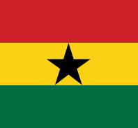

Joel Dadzie
About Me
I'm Joel, and I’m aspiring to be a software developer. I’m currently taking courses through BYU-Pathway Worldwide and hope to earn a Software Development certificate in the next couple of years. If you don’t find me at work, then I’m probably at the gym, listening to music, or at home learning something new.
Ghana

I’ve been in Ghana my whole life. Ghana is known for being one of the most peaceful and welcoming countries on the continent, and maybe that’s one of the reasons I’ve never left. Ghana has amazing places and scenes like the Cape Coast Castle and Kakum National Park with its famous canopy walkway. We are on track to become one of the major producers of gold in Africa, which could bring a lot of opportunities, but I hope we don't ruin our water bodies while doing that.